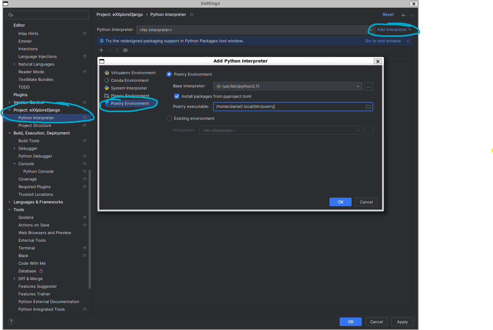
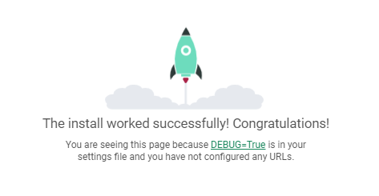
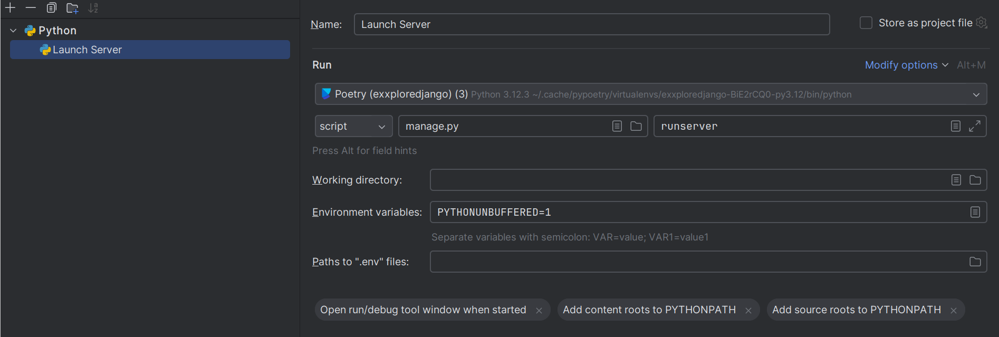

Zuerst wirst du dich mit den grundlegenden Basics und Werkzeugen vertraut machen, dein Wissen für dein Abenteuer mit Django aufbauen und alles lernen, um deine Abenteuer zu meistern.
[strg] + [shift] + [a] → "python interpreter"
In einem PyCharm Terminal
python manage.py runserverIm Browser http://localhost:8000/ aufrufen
Lege in PyCharm eine neue Run Configuration an:
Stoppe den zuvor über das Terminal gestarteten Server und starte die neue Run Configuration im Debug Modus.
Erkunde doch ein wenig die Verzeichnisstruktur & Dateien des Repositories.
PROJEKT_ROOT
|-+ eXXploreDjango # Django-Projekt-Verzeichnis
| |-- asgi.py
| |-- settings.py # Einstellungen zum Django-Projekt
| |-- urls.py # URL-Definition für den Dispatcher
| |-- wsgi.py
|-+ app1 # Django-App 1
| |-- migrations # Migrationen
| |-- templates # Templates
| |-- models.py # Models
| |-- views.py # Views
|-- app2 # Django-App 2
|-- manage.py # Verwaltungsskript
In Django werden logisch zusammenhängende Code-Stücke in Apps gebündelt. Diese Apps sollten so wiederverwendbar wie möglich sein. Lass uns deine erste App erschaffen.
python manage.py startapp app1„Views sind Python-Methoden, die einen Request entgegen nehmen und mit einem Response antworten“ Zitat: Die Tutoren (heute)
Erstelle in deinem Projekt eine neue App "pirate_ship"
Lege in dieser neuen App einen View an, der die Anzahl der Piraten anzeigt, die bereits über die Planke gegangen sind. Außerdem soll ein Link angezeigt werden, um die Zahl um 1 zu erhöhen, sowie ein weiterer Link, um die Zahl um 1 zu verringern.
So ähnlich sollte es aussehen:
Werf doch mal einen Blick auf folgende Doku: Django URL-Dispatcher
Lege einen weiteren View an, der den Benutzer nach dem Name des Kapitäns fragt
Der Name soll abgesendet werden können und anschließend den Kapitän mit seinem Namen freundlich begrüßen. Außerdem soll die Begrüßungsseite einen Link zurück zur Namenseingabe enthalten.
Dein Formular im HTML setzt normalerweise ein POST-Request ab. Die Daten daraus kannst du aus dem request-Parameter deines Views auslesen.
Sternchenaufgabe: Versuche doch auf eine Falscheingabe (leer?) des Namens mit einer entsprechenden Meldung zu reagieren.
Diese Zeilen müssen in den <head> deines HTML-Dokumentes. Anschließend kannst du Bootstrap vollumfänglich in deinem Template nutzen!
| # | Ship |
|---|---|
| 1 | Black Pearl |
| 2 | Roebuck |
| 3 | Bonita |
Trinke einen ☕
oder schau dir Jinja2 an. Das ist eine weitere Templating-Sprache die
offiziell von Django unterstützt
wird. Werf doch mal einen Blick in
deren Doku!
Die grundlegenden Bestandteile von Django sind das ORM (Object-Relational Mapping), ein Werkzeug zur Datenbankinteraktion, und die Verwaltung von URLs.
In Django erstellt man Entitäten namens "Models" – einfache Python-Klassen. Django übernimmt die Verantwortung, diese Entitäten dauerhaft zu speichern. Jegliche Änderungen an diesen Models werden automatisch im Datenbankschema reflektiert, und in den meisten Fällen kann das Verwaltungstool "django-admin" diese Änderungen automatisch umsetzen.
Ein Beispiel:
Django liefert bereits eine App namens 'django.contrib.admin' mit. Diese erstellt vollständige Admin-Ansichten für alle Models in einem Projekt - inklusive entsprechender Workflows wie Create, Edit, Delete.
In deinem Projekt ist 'django.contrib.admin' bereits aktiviert. Die zu verwaltenden Models müssen nur noch registriert werden und schon erhält man entsprechende Ansichten!
Ein Beispiel:
⭐
Du beherrscht nun die wichtigsten Werkzeuge und kannst nun auf einem höheren Schwierigkeitsgrad dein Abenteuer fortsetzen .⭐